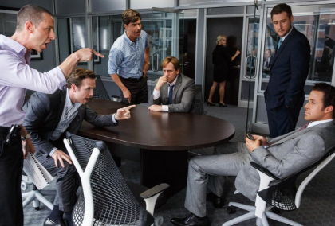
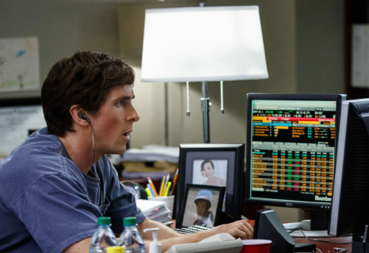

빅쇼트 (2016)
|
|

“우린 지금 미국 국민들이 망하는 데 배팅한 거야.
곤경에 빠지는 건 뭔가를 몰라서가 아니다. 뭔가를 확실하게 안다는 착각 때문이다. 마크 트웨인의 말이다.
《머니볼》, 《블라인드 사이드》 등의 작가로 잘 알려진 마이클 루이스의 논픽션 《빅 숏》을 바탕으로 만들어진 영화.
즉 2008년 서브프라임 모기지 사태를 소재로 하였다.
해당사태를 가장 잘 설명한 영화 중 하나.
초반부 영화는 모기지 시장이 어떻게 미국의 성장과 궤를 같이 했는지 알려준다. |
극의 주인공들은 시도 때도 없이 카메라를 쳐다보고 관객에게 말을 건넨다.
라이언 고슬링은 현재의 경제 상황에 대해 친절하게 설명해주고,
방금 장면은 현실과는 조금 달랐다고 친절하게 관객에게 말해주기까지 한다.
거품 목욕하는 마고 로비와 블랙잭을 치고 있는 셀레나 고메즈가 우리에게 경제학 용어들을 설명해준다.
거품과 도박이라는 시각적 정보를 주면서, 서브프라임 모기지와 CDO의 상황을 빗대어 시각적으로 전달한다.
극 중 도이치뱅크 펀드 매니저 역할을 했던 라이언 고슬링이 AAA부터 B등급까지 대출 신용평가등급이
새겨진 젠가를 쌓아 미국 주택담보대출 시장의 문제점을 설명하는 부분은 허술한 주담대 문제점을 단번에 이해하게 만든다.
리먼브라더스가 파산한 것은 어쩌면 예견된 일이었고, 월가와 금융시장의 오만방자함이 가장 큰 원인이었다. 우리나라 역시 2020년부터 2022년까지 이른바 부동산 ‘불장’을 겪으면서 레고랜드, 생활형 숙박시설(생숙), 지식산업센터 등 부실하고 방만한 대출 그리고 정부규제를 피해 지어진 부동산 PF들이 넘쳐난다. “미국경제가 무너진다에 돈을 걸었어.” “채무불이행 증가추세인데, 걱정 되진 않구요?” |

영화의 목적은 금융위기에 성공한 역발상을 칭찬하는 것이 아니다. 금융몰락으로 결국 600만명이 직장을 잃고 500만명이 집을 잃었으나 책임지고 죄 값을 치룬 것은 잔챙이 수준의 금융인 단 한명이라 꼬집는다. 또 파산위기의 대형 금융사 중 리먼 브라더스만 빼고 나머지는 천문학적인 구제금융(7조 달러)을 받아 모두 살아남았다. 마이클 버리는 모기지에 신용부도 스와프를 만든 최초의 사례이다. 병원은 커녕 약국에도 들른 적 없는 모기지가 생명이 위독한 중증 환자인줄은 아무도 몰랐기 때문이다. 오직 그만이 오늘 아침에도 근육을 자랑하며 조깅하던 모기지가 사실은 온몸에 악성 종양이 퍼져 곧 죽을 것이라는 사실을 알아차린것이다. '시장의 피가 흥건할 때 투자하라'는 격언이 있다. 이는 하한가 따라잡기를 하라는 것이 아니라 공포에 떨지 말고 숨을 깊게 들이쉬고 시장을 오히려 매수 관점에서 바라보다는 말이다. 빅쇼트를 다큐멘터리에 비유하자만 마이클 무어의 드라마 판이고 마틴 스콜세지 감독의 <더 울프 오브 월스트리트>보다 상세하고 명쾌한 해석을 보여줬다. 카메오로 출연한 마고 로비는 더 울프 오브 월스트리트에서 연기한 배역처럼 우아하게 거품 목욕을 하며 영화에 나오는 금융 용어를 설명해주는데, 전작 또한 주식과 월 스트리트와 관련된 영화인 것을 보면 감독의 노골적인 패러디로 볼 수 있다. |